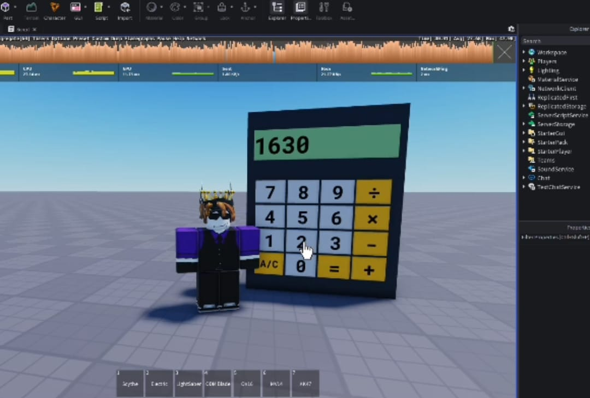
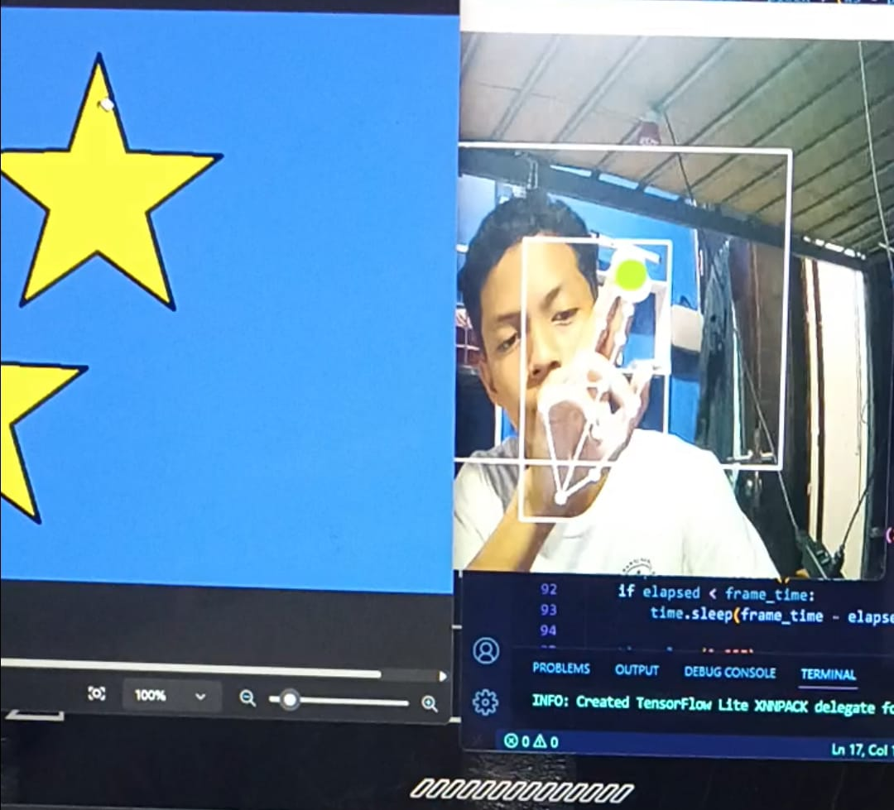
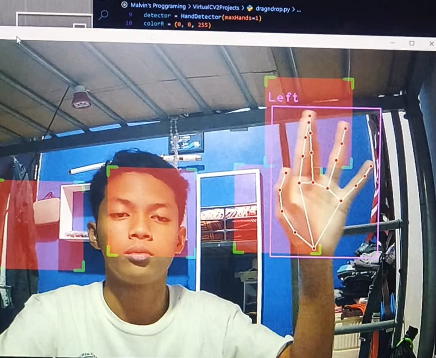
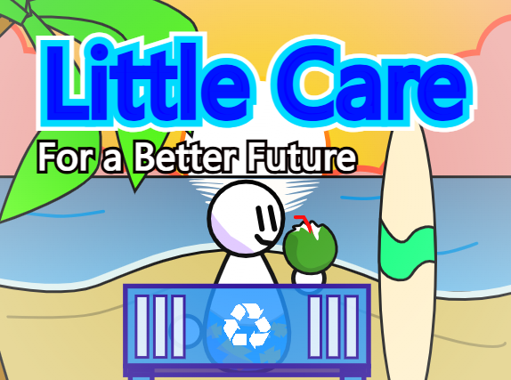
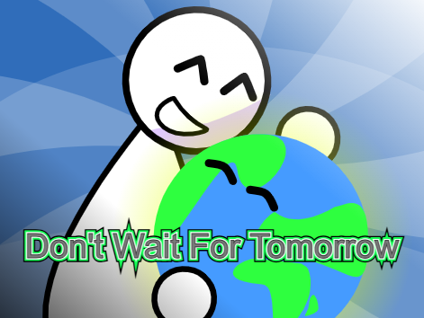
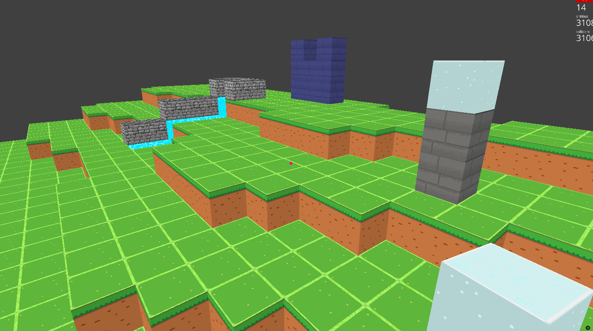
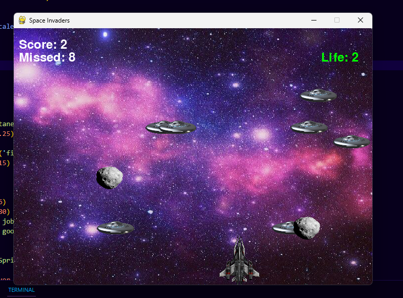
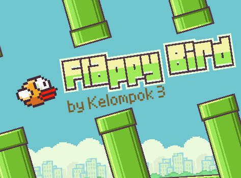
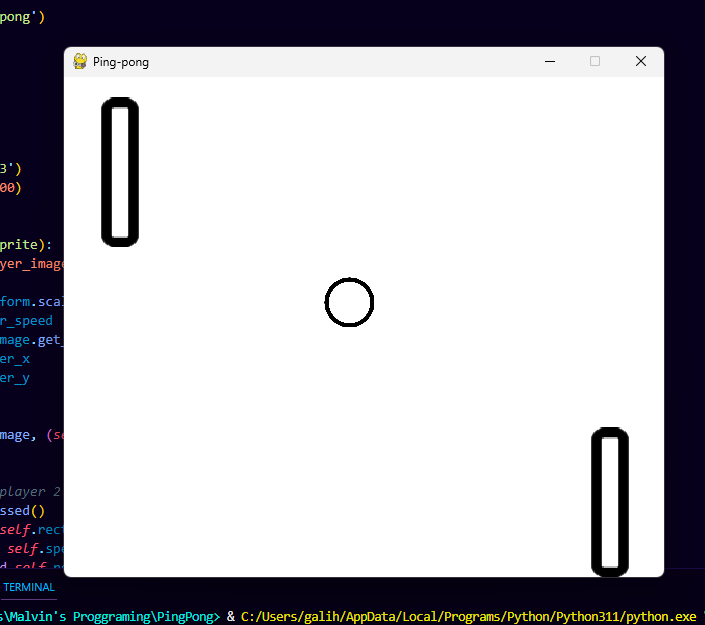

Calculator
Kalkulator fungsional, bisa mengoperasikan + - / x.
Ini adalah beberapa proyek yang telah saya bangun^^

Kalkulator fungsional, bisa mengoperasikan + - / x.

Bisa menggerakkan cursor dgn gerakan tangan dari kamera.

Mendeteksi ada tangan, dan bonusnya bisa pindah-pindahin kotak.

Game simulasi bekerja di kebun binatang modern dengan AI Assistant, yang akan membantu memberi arahan saat kita kerja. Tapi dengan munculnya kejadian yang menyuruh kita memutuskan mau tetap ikuti saran AI atau dari hati kita sendiri. Game ini dulu dibuat untuk keperluan YCWC 2025.
Game Link
Game story berlatar di future era, berperan sebagai polisi digital di kota kecil dan melaksanakan misi disana. Game ini dulu dibuat untuk keperluan ITCC Udayana 2025.
Game Link
Animasi pendek tentang pentingnya menjaga lingkungan. Dulu dibuat untuk lomba Kids Hackathon 2025 dari educourse.id, proyeknya tidak lolos :(
Scratch Link
Animasi pendek untuk memperingati hari bumi. Dulu dibuat untuk lomba Mini Scratch Competition 2025
Scratch Link
Game eksplorasi di Antartika, menjelajah gua, gunung, dan kawasan-kawasan yang ada di Antaratika. Game ini dulu dibuat untuk keperluan CNC 2024.
Game Link
Game sandbox dikejar Nextbot, trend pada maasanya. Dengan map luas, bisa dijelajah dan menyimpan easteregg.
Game Link
Game Minecraft tapi di re-create pake python. Perbedaanya yaitu cuma ini simplifiednya.

Game 2d tembak-tembakan diluar angkasa dengan pesawat tempur.

Game Flappy Bird yang dibuat ulang di Scratch. Dulu ini dibuat unatuk tugas Informatika saat kelas 7.
Scratch Link
Game pingpong 2 players. Up&Down arrow untuk player 1, dan W&S key untuk player 2.